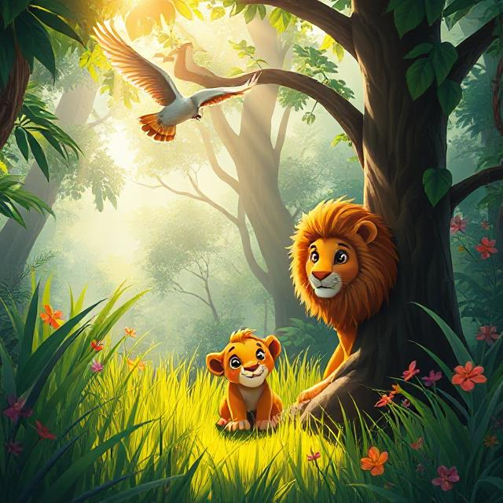

A Jungle Tale About Safety and Growing Up
In the heart of a sun-dappled jungle, where parrots squawked and monkeys swung from trees, lived a lively lion cub named Lulu.
Lulu was brave.
Lulu was curious.
Lulu was also… not very good at listening.
Whenever Mama Lion called, “Lulu, stay close!” — Lulu would dash off chasing butterflies.
When Tortoise said, “Lulu, wait your turn!” — Lulu would skip ahead.
And when the jungle teachers gave instructions, Lulu’s ears were somewhere else entirely.
“I just want to have fun!” she’d say, giggling.
One sunny morning, the jungle animals gathered for their daily walk to the watering hole — the place where everyone came to drink, splash, and play.
Wise Owl, who was respected by all the animals, fluttered down to a low branch. He cleared his throat.
“Today,” he hooted, “we must all stay on the path. The jungle trails are tricky, and the tall grasses hide many things.”
The animals nodded. Even the cheetah cubs, who were always zipping around, sat quietly and listened.
All except Lulu.
She was too busy trying to balance a leaf on her nose to hear anything Wise Owl said.
When the walk began, the animals formed a neat line. Mama Lion walked near the front. Lulu trotted at the back, bouncing and humming to herself.
As they moved along the trail, Lulu noticed a flutter of color in the bushes.
“A butterfly!” she gasped. “And such a pretty one!”
Without thinking, she pounced into the grass after it — off the path, and deep into the jungle.
The butterfly fluttered higher and higher, until Lulu lost sight of it. She looked around.
Everything was quiet.
Everything was green.
And worst of all… she was alone.
“Hello?” she called. “Mama? Wise Owl? Anyone?”
No answer. The trees rustled, and somewhere far off, a monkey chattered. Lulu’s ears drooped.
“I shouldn’t have run off,” she whispered, curling up by a tree stump. “I should’ve listened.”
Just then, a familiar flutter of feathers landed nearby.
“Hoo-hoo,” came a gentle voice.
It was Wise Owl.
He looked at Lulu with kind, knowing eyes.
“I thought I’d find you here,” he said softly. “You missed my warning, didn’t you?”
Lulu nodded, ashamed. “I wasn’t listening… I’m sorry.”
Wise Owl smiled. “Even the bravest cubs get lost sometimes. But listening helps us stay safe. Come, let’s get you back.”
Before long, they heard strong paws padding toward them — Mama Lion!
She rushed over, nuzzling Lulu gently.
“My little cub,” she murmured. “I was so worried.”
Lulu pressed close to her mom. “I’ll listen next time. I promise.”
From that day on, Lulu still played and explored, but she always listened first — to her mama, to Wise Owl, and to the other animals who helped keep the jungle safe.
And you know what?
She didn’t miss out on any fun.
She just had it more safely — and with friends.